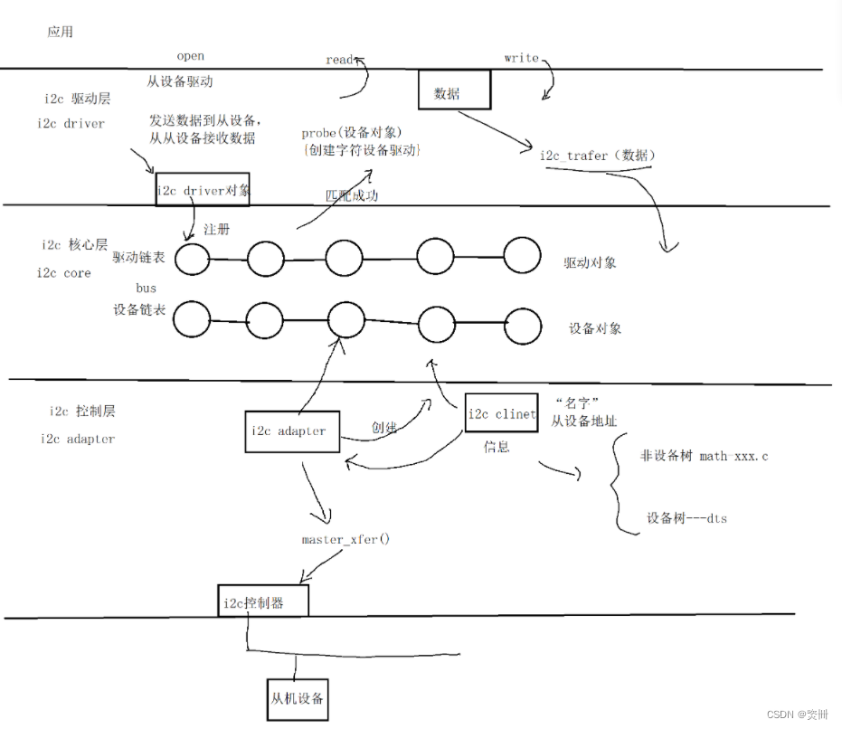

概述
本文主要讲解一下platform driver是如何匹配platform device并执行probe函数的。
简介
之前的文章0016_Android如何调整内核模块加载顺序.md中，我们了解到所有驱动模块的程序编译到Linux内核中，由do_initcall函数按照顺讯加载，本文主要讲解一下platform driver是如何匹配platform device并执行probe函数的。
参考
platform driver软件架构
在驱动程序中，我们通常会定义一个platform_driver的结构体，其中包含了各种操作函数：
static const struct dev_pm_ops pax_bat_pm_ops = {
.suspend = pax_battery_suspend,
.resume = pax_battery_resume,
};
static const struct of_device_id pax_battery_of_match[] = {
{.compatible = "pax,battery",},
{},
};
MODULE_DEVICE_TABLE(of, pax_battery_of_match);
static struct platform_driver pax_battery_driver = {
.probe = pax_battery_probe,
.remove = pax_battery_remove,
.driver = {
.name = "battery",
.of_match_table = pax_battery_of_match,
#ifdef CONFIG_PM
.pm = &pax_bat_pm_ops,
.id_table = xxx_id,
#endif
},
};
static int __init pax_battery_init(void)
{
return platform_driver_register(&pax_battery_driver);
}
device_initcall_sync(pax_battery_init);
其中，of_match_table和id_table都是用来在设备树中和设备匹配，且都是通过compatible，前者优先级更高，后者则会在前者未匹配的情况下去掉compatible的供应商信息后再匹配，即id_table只匹配device名字。举个例子，可以看到下面这个device和driver的compatible是不匹配的，但是它的id_table和device名字都是pn553，所以也会匹配上，
device:
&qupv3_se5_i2c {
status = "okay";
pn553@28 {
compatible = "nxp,pn553";
reg = <0x28>;
nxp,pn557-irq = <&tlmm 105 0>;
nxp,pn557-ven = <&tlmm 111 0>;
nxp,pn557-fw-dwnld = <&tlmm 112 0>;
};
};
driver:
/* kept same as dts */
static const struct i2c_device_id nfc_i2c_dev_id[] = { { "pn553", 0 },
{} };
static const struct of_device_id nfc_i2c_dev_match_table[] = {
{
.compatible = "nxp,pn557",
},
{}
};
static const struct dev_pm_ops nfc_i2c_dev_pm_ops = { SET_SYSTEM_SLEEP_PM_OPS(
nfc_i2c_dev_suspend, nfc_i2c_dev_resume) };
static struct i2c_driver nfc_i2c_dev_driver = {
.id_table = nfc_i2c_dev_id,
.probe = nfc_i2c_dev_probe,
.remove = nfc_i2c_dev_remove,
.driver = {
.name = "nxp,pn557",
.pm = &nfc_i2c_dev_pm_ops,
.of_match_table = nfc_i2c_dev_match_table,
.probe_type = PROBE_PREFER_ASYNCHRONOUS,
},
};
platform_driver结构体的定义之中会找到许多函数指针:
struct platform_driver {
int (*probe)(struct platform_device *);
int (*remove)(struct platform_device *);
void (*shutdown)(struct platform_device *);
int (*suspend)(struct platform_device *, pm_message_t state);
int (*resume)(struct platform_device *);
struct device_driver driver;
struct platform_device_id *id_table;
};
struct device_driver {
const char *name;
struct bus_type *bus;
struct module *owner;
const char *mod_name; /* used for built-in modules*/
bool suppress_bind_attrs; /* disables bind/unbind via sysfs */
int (*probe) (struct device *dev);
int (*remove) (struct device *dev);
void (*shutdown) (struct device *dev);
int (*suspend) (struct device *dev, pm_message_t state);
int (*resume) (struct device *dev);
const struct attribute_group **groups;
const struct dev_pm_ops *pm;
struct driver_private *p;
};
之后我们初始化时会调用函数platform_driver_register进行注册，把platform的函数指针传入了driver结构体中。这样device_driver和platform_driver都有了具体的值,但是好像还是不知道如何执行到我们定义的probe函数。 到现在为止，仅仅是设备加入到了系统中，设备还没有与驱动联系到一起。下面分析驱动的加载过程，就可以看到驱动是怎么样和设备关联到一起的。
i2c驱动架构
i2c driver：从设备驱动层
需要和应用进行交互，封装数据。
————————————————————————————————————————
i2c core：i2c核心层
维护i2c总线（bus），其中包括：i2c driver、i2c device链表
————————————————————————————————————————
i2c device：i2c控制层、初始化i2c控制器
完成从设备将数据写入和读取。
————————————————

i2c_add_driver绑定device全过程
我们一般写i2c驱动都是通过i2c_add_driver接口新增i2c_client，然后i2c-core-base(i2c总线)去执行匹配流程：
static int __init cw2017_init(void)
{
int ret = 0;
pr_err("enter\n");
ret = i2c_add_driver(&cw2017_i2c_driver);
return ret;
}
module_init(cw2017_init);
具体driver和devices匹配流程如下：
drivers/i2c/i2c-core-base.c:
* i2c_add_driver(driver)
└── i2c_register_driver(THIS_MODULE, driver)
└── driver_register(&driver->driver);
└── ret = bus_add_driver(drv);
└── driver_attach(drv);//调用driver_attach()匹配总线上的设备
└── bus_for_each_dev(drv->bus, NULL, drv, __driver_attach);//历遍总线上的驱动，每次都调用回调函数fn()（这里是__device_attach），如果fn()返回1则匹配成功
└── while (!error && (dev = next_device(&i))) error = fn(dev, data); //形参fn表示__driver_attach，也就是对每个设备执行__driver_attach
├── ret = driver_match_device(drv, dev); //用drv->bus的match方法进行匹配，如果成功就会继续调用driver_probe_device
│ └── return drv->bus->match ? drv->bus->match(dev, drv) : 1;
│ └── struct bus_type i2c_bus_type = { .match = i2c_device_match,} //调用到i2c总线的.match，也就是i2c_device_match
│ ├── i2c_device_match //重要
│ ├── if (i2c_of_match_device(drv->of_match_table, client)) return 1; //第一种优先匹配compatible
│ │ └── match = of_match_device(matches, &client->dev);
│ │ └── return of_match_node(matches, dev->of_node);
│ │ └── match = __of_match_node(matches, node);
│ │ └── for (; matches->name[0] || matches->type[0] || matches->compatible[0]; matches++)
│ │ └── score = __of_device_is_compatible(node, matches->compatible,matches->type, matches->name);
│ │ └── prop = __of_find_property(device, "compatible", NULL);
│ │ └── if (of_compat_cmp(cp, compat, strlen(compat)) == 0) break; //最终跟到是去匹配驱动的.compatible和设备(dts)的compatible是否匹配
│ └── if (i2c_match_id(driver->id_table, client)) return 1;
│ └── if (strcmp(pdev->name, id->name) == 0) return id; //重要，这里只匹配device名称和driver id_table
├── if (ret == 0) return 0; //未匹配
├── else if (ret == -EPROBE_DEFER)
│ └── driver_deferred_probe_add(dev);
│ └── list_add_tail(&dev->p->deferred_probe, &deferred_probe_pending_list); //用来记录哪些驱动被 deferred probe
└── if (!dev->p->dead && !dev->driver)
└── driver_probe_device(drv, dev);
└── ret = really_probe(dev, drv); //drivers/base/dd.c
├── if (ret == -EPROBE_DEFER)
│ └── driver_deferred_probe_add_trigger(dev, local_trigger_count);
│ └── driver_deferred_probe_trigger();
│ └── schedule_work(&deferred_probe_work);// 用来调度相应的 work func 来执行 deferred probe 动作
│ └── deferred_probe_work_func(struct work_struct *work)//Retry probing devices in the active list.
│ └── bus_probe_device(dev);
├── ret = pinctrl_bind_pins(dev); //当dts pinctrl为default时，自动匹配pinctrl 0007_pinctrl原理与基础.md 有讲
├── driver_sysfs_add(dev) //在sys/class下面创建驱动节点
│ ├── sysfs_create_link(&dev->driver->p->kobj, &dev->kobj,kobject_name(&dev->kobj));
│ └── sysfs_create_link(&dev->kobj, &dev->driver->p->kobj,"driver");
├── if (dev->bus->probe) ret = dev->bus->probe(dev);
├── else if (drv->probe) ret = drv->probe(dev);
├── pinctrl_init_done(dev);
│ └── pinctrl_select_state(pins->p, pins->default_state); //配置pin脚为default的state
└── driver_bound(dev);//通知总线绑定驱动，将设备添加到驱动的设备链表。
├── device_links_driver_bound(dev);
│ └── dev->links.status = DL_DEV_DRIVER_BOUND; //状态标记为已绑定
├── driver_deferred_probe_trigger();
└── blocking_notifier_call_chain(&dev->bus->p->bus_notifier,BUS_NOTIFY_BOUND_DRIVER, dev);
platform_driver_register绑定device全过程
和上面i2c驱动注册都是一样的，这里不做过多分析
* platform_driver_register(&pax_charger_driver);
└── driver_register(&drv->driver);
具体看一下
driver_match_device函数匹配流程，platform驱动如下：
//match 函数
static inline int driver_match_device(struct device_driver *drv,struct device *dev)
{
return drv->bus->match ? drv->bus->match(dev, drv) : 1;
}
/**
* platform_match - bind platform device to platform driver.
* @dev: device.
* @drv: driver.
*
* Platform device IDs are assumed to be encoded like this:
* "<name><instance>", where <name> is a short description of the type of
* device, like "pci" or "floppy", and <instance> is the enumerated
* instance of the device, like '0' or '42'. Driver IDs are simply
* "<name>". So, extract the <name> from the platform_device structure,
* and compare it against the name of the driver. Return whether they match
* or not.
*/
static int platform_match(struct device *dev, struct device_driver *drv)
{
struct platform_device *pdev = to_platform_device(dev);
struct platform_driver *pdrv = to_platform_driver(drv);
/* When driver_override is set, only bind to the matching driver */
if (pdev->driver_override)
return !strcmp(pdev->driver_override, drv->name);
/* Attempt an OF style match first */
if (of_driver_match_device(dev, drv))
return 1;
/* Then try ACPI style match */
if (acpi_driver_match_device(dev, drv))
return 1;
/* Then try to match against the id table */
if (pdrv->id_table)
return platform_match_id(pdrv->id_table, pdev) != NULL;
/* fall-back to driver name match */
return (strcmp(pdev->name, drv->name) == 0);
}
struct bus_type platform_bus_type = {
.name = "platform",
.dev_attrs = platform_dev_attrs,
.match = platform_match,
.uevent = platform_uevent,
.pm = &platform_dev_pm_ops,
};
i2c驱动的也一样的步骤：
//i2c-core-base.c
struct bus_type i2c_bus_type = {
.name = "i2c",
.match = i2c_device_match,
.probe = i2c_device_probe,
.remove = i2c_device_remove,
.shutdown = i2c_device_shutdown,
};
EXPORT_SYMBOL_GPL(i2c_bus_type);
static int i2c_device_match(struct device *dev, struct device_driver *drv)
{
struct i2c_client *client = i2c_verify_client(dev);
struct i2c_driver *driver;
/* Attempt an OF style match */
if (i2c_of_match_device(drv->of_match_table, client))
return 1;
/* Then ACPI style match */
if (acpi_driver_match_device(dev, drv))
return 1;
driver = to_i2c_driver(drv);
/* Finally an I2C match */
if (i2c_match_id(driver->id_table, client))
return 1;
return 0;
}
结论
platform_driver_register注册时历遍总线上的驱动，每次都调用回调函数fn()（这里是__device_attach），如果fn()返回1则匹配成功，这里fn用drv->bus的match方法进行匹配。
match匹配方式有两种，分别是
i2c_of_match_device和i2c_match_id，都是用来在设备树中和设备匹配，且都是通过compatible，前者优先级更高，后者则会在前者未匹配的情况下去掉compatible的供应商信息后再匹配，即id_table只匹配device名字。如果成功就会继续调用driver_probe_device。
真正执行的really_probe只要干了三件事
配置dts pinctrl，当dts pinctrl为default时，自动匹配规则0007_pinctrl原理与基础.md有讲
driver probe defer延迟机制，这里0029_driver_probe_defer延迟机制.md有讲。
通知总线绑定驱动，将设备添加到驱动的设备链表。
打印
利用dump_stack可以清晰的看到probe调用流程：
[ 4.681355] PAX_CHG: func:sgm41528_charger_probe:line:1544.
[ 4.686977] CPU: 1 PID: 1 Comm: swapper/0 Tainted: G W 4.19.157 #43
[ 4.694566] Hardware name: Qualcomm Technologies, Inc. SCUBA (Flattened Device Tree)
[ 4.702359] [<c0111c78>] (unwind_backtrace) from [<c010d1b0>] (show_stack+0x10/0x14)
[ 4.710125] [<c010d1b0>] (show_stack) from [<c1296398>] (dump_stack+0x9c/0xe4)
[ 4.717375] [<c1296398>] (dump_stack) from [<c079b9d4>] (sgm41528_charger_probe+0xe0/0xde4)
[ 4.725759] [<c079b9d4>] (sgm41528_charger_probe) from [<c095b4bc>] (i2c_device_probe+0x1d8/0x2c8)
[ 4.734744] [<c095b4bc>] (i2c_device_probe) from [<c07567d4>] (really_probe+0x158/0x3e8)
[ 4.742856] [<c07567d4>] (really_probe) from [<c0756544>] (driver_probe_device+0x78/0x1b0)
[ 4.751134] [<c0756544>] (driver_probe_device) from [<c0754a70>] (bus_for_each_drv+0x84/0xc4)
[ 4.759677] [<c0754a70>] (bus_for_each_drv) from [<c0756b64>] (__device_attach+0xc0/0x174)
[ 4.767955] [<c0756b64>] (__device_attach) from [<c0754c0c>] (bus_probe_device+0x2c/0x84)
[ 4.776154] [<c0754c0c>] (bus_probe_device) from [<c0752028>] (device_add+0x638/0x74c)
[ 4.784093] [<c0752028>] (device_add) from [<c095b9bc>] (i2c_new_device+0x27c/0x2e4)
[ 4.791854] [<c095b9bc>] (i2c_new_device) from [<c0960590>] (of_i2c_register_devices+0xcc/0x188)
[ 4.800655] [<c0960590>] (of_i2c_register_devices) from [<c095c0dc>] (i2c_register_adapter+0x24c/0x414)
[ 4.810072] [<c095c0dc>] (i2c_register_adapter) from [<c096344c>] (geni_i2c_probe+0x650/0x6a0)
[ 4.818706] [<c096344c>] (geni_i2c_probe) from [<c0759108>] (platform_drv_probe+0x50/0xa8)
[ 4.826985] [<c0759108>] (platform_drv_probe) from [<c07567d4>] (really_probe+0x158/0x3e8)
[ 4.835269] [<c07567d4>] (really_probe) from [<c0756544>] (driver_probe_device+0x78/0x1b0)
[ 4.843547] [<c0756544>] (driver_probe_device) from [<c0756d20>] (__driver_attach+0xe8/0x144)
[ 4.852094] [<c0756d20>] (__driver_attach) from [<c07547a0>] (bus_for_each_dev+0x78/0xa8)
[ 4.860288] [<c07547a0>] (bus_for_each_dev) from [<c0754edc>] (bus_add_driver+0x14c/0x278)
[ 4.868567] [<c0754edc>] (bus_add_driver) from [<c0757dfc>] (driver_register+0x6c/0x100)
[ 4.876683] [<c0757dfc>] (driver_register) from [<c0102ffc>] (do_one_initcall+0x154/0x320)
[ 4.884970] [<c0102ffc>] (do_one_initcall) from [<c1d0145c>] (kernel_init_freeable+0x378/0x420)
[ 4.893694] [<c1d0145c>] (kernel_init_freeable) from [<c12a9ce8>] (kernel_init+0x8/0x11c)
[ 4.901891] [<c12a9ce8>] (kernel_init) from [<c01010b4>] (ret_from_fork+0x14/0x20)
[ 4.909480] Exception stack(0xf5cc1fb0 to 0xf5cc1ff8)